Home
Menu
Reservation
Contact
About Us
Home
Menu
Reservation
Contact
About Us
 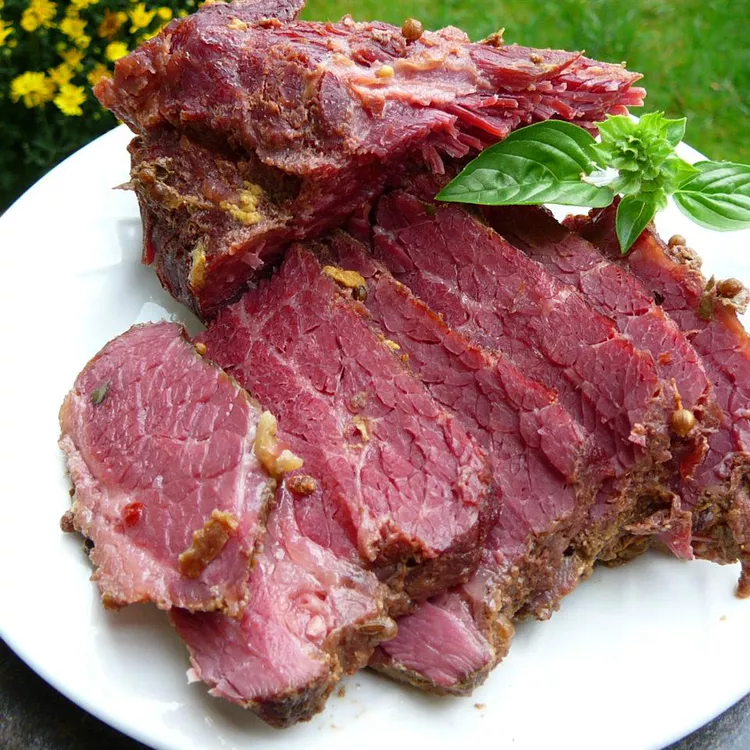
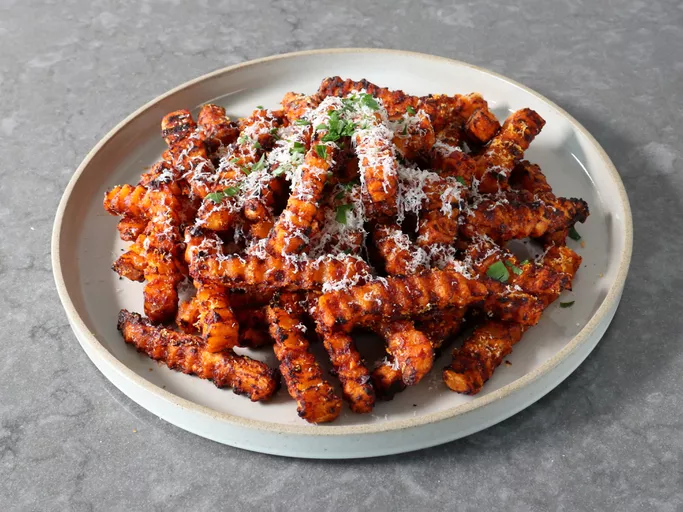
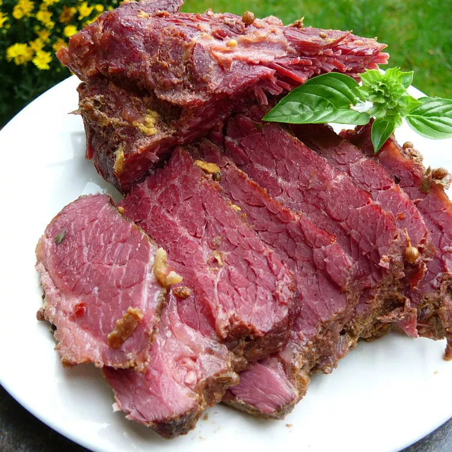
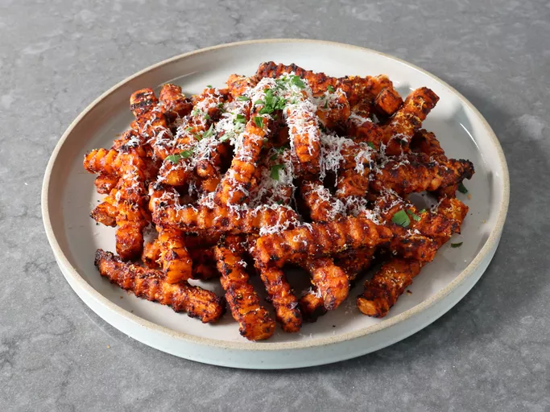

 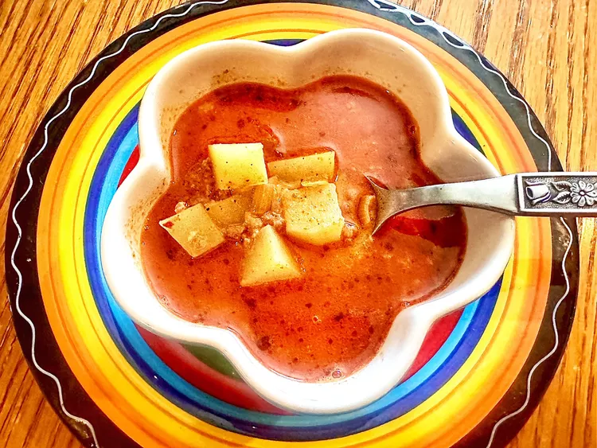
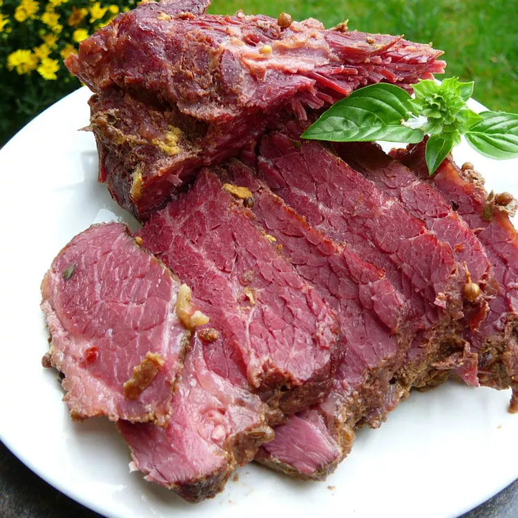
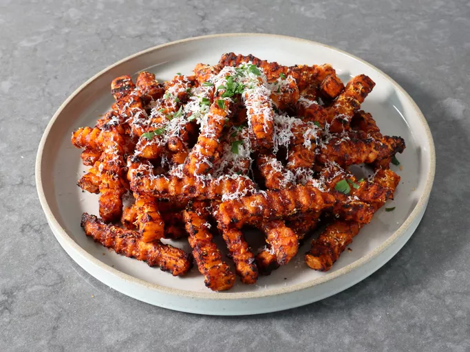
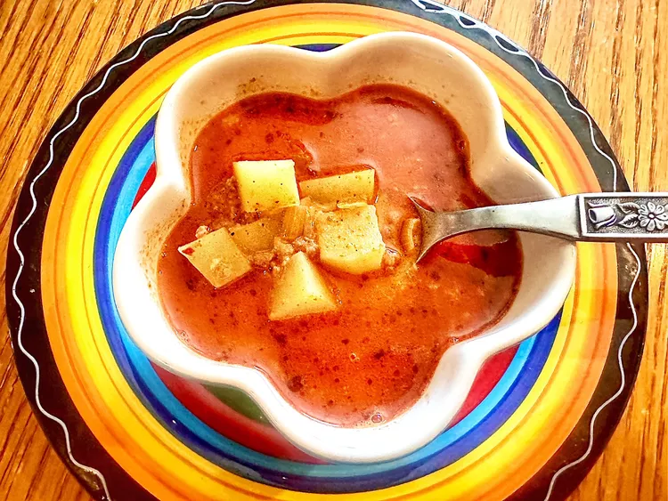
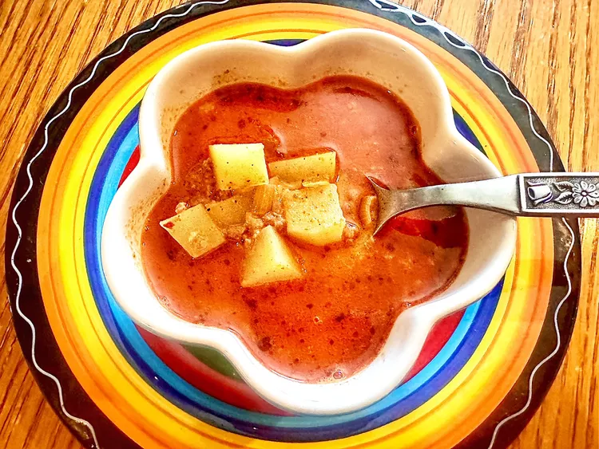
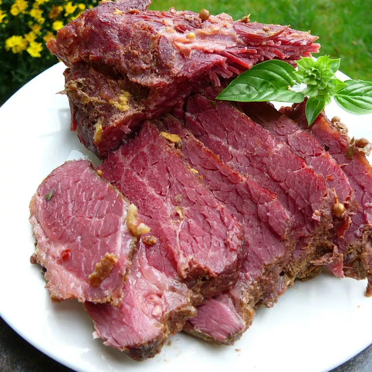
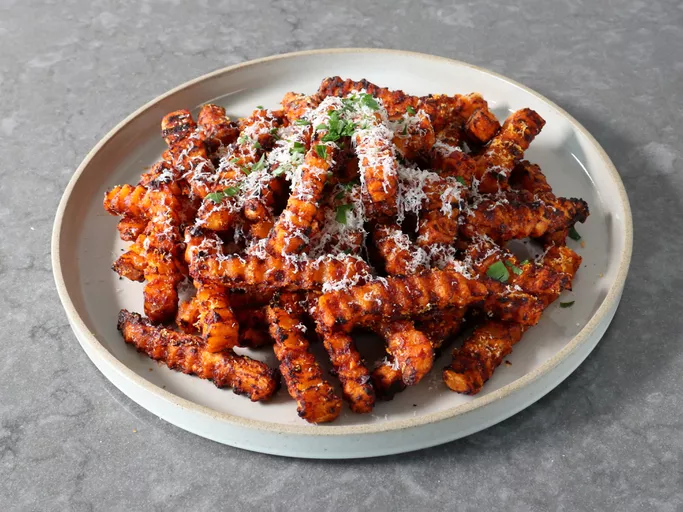
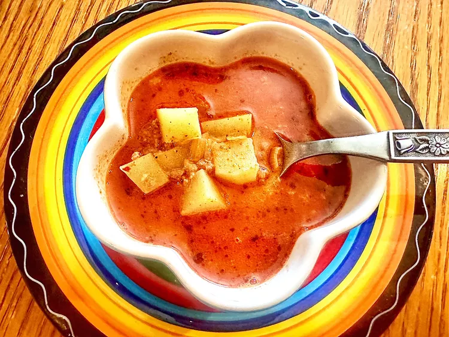
This copycat onion wrapped flying Dutchman is essentially a cheeseburger served in an onion "bun" that is tender, crisp, and sweet, and pairs perfectly well with the richness of the meat.
View Now!This pepperoni pizza grilled cheese sandwich is two classic favorites blended into one. With pepperoni, mozzarella, pizza sauce, and black olives, this is no plain grilled cheese sandwich. I'm a meat and sauce kind of gal so I came up with this. Feel free to use other pizza toppings if you like.
View Now!Georgia Pot Roast, a TikTok recipe from Allrecipes Allstar sweetpealifestyle, is a simple twist on the Mississippi Pot Roast recipe. Using pickled Vidalia onions, instead of pepperoncini, this recipe is sure to please everyone. Serve over rice, noodles, mashed potatoes, or mashed cauliflower.
View Now